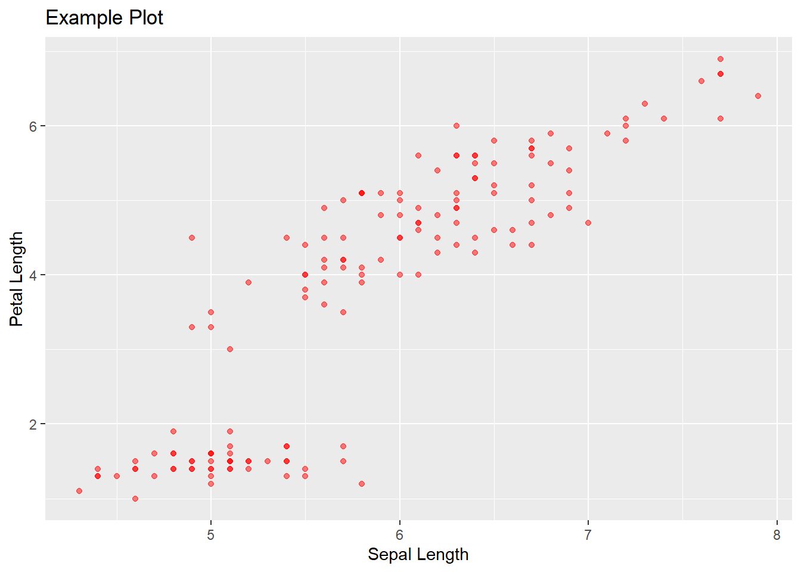

Howdy y'all, this is my first blog post on my site.
Here's a link to my first project.
Just for convenience here's a link to Google
Using Python with R
One of the neat things about markdown is that you can isolate code chunks and have them run perfectly fine right next to each other.
For example, here I'll load in the classic iris dataset using R.
library(reticulate)
library(tidyverse)## ── Attaching packages ────────────────────────────────────────────────────────────────────────────────────── tidyverse 1.3.0 ──## ✓ ggplot2 3.3.2 ✓ purrr 0.3.4
## ✓ tibble 3.0.3 ✓ dplyr 1.0.1
## ✓ tidyr 1.1.1 ✓ stringr 1.4.0
## ✓ readr 1.3.1 ✓ forcats 0.5.0## ── Conflicts ───────────────────────────────────────────────────────────────────────────────────────── tidyverse_conflicts() ──
## x dplyr::filter() masks stats::filter()
## x dplyr::lag() masks stats::lag()iris <- iris
head(iris)## Sepal.Length Sepal.Width Petal.Length Petal.Width Species
## 1 5.1 3.5 1.4 0.2 setosa
## 2 4.9 3.0 1.4 0.2 setosa
## 3 4.7 3.2 1.3 0.2 setosa
## 4 4.6 3.1 1.5 0.2 setosa
## 5 5.0 3.6 1.4 0.2 setosa
## 6 5.4 3.9 1.7 0.4 setosaOne of the coolest parts of this is that the R and python environments can talk to one another. For example, here we can use the imported iris dataset from above and use it in a python environment with ease.
import pandas as pd
import numpy as np
r.iris.head()
#We can also manipulate the dataset thanks to pandas## Sepal.Length Sepal.Width Petal.Length Petal.Width Species
## 0 5.1 3.5 1.4 0.2 setosa
## 1 4.9 3.0 1.4 0.2 setosa
## 2 4.7 3.2 1.3 0.2 setosa
## 3 4.6 3.1 1.5 0.2 setosa
## 4 5.0 3.6 1.4 0.2 setosaprint(np.mean(r.iris["Sepal.Length"]))
#python lets us treat the dataframe like an array and index using indices## 5.84333333333r.iris.loc[0:5,"Sepal.Length":"Petal.Length"] ## Sepal.Length Sepal.Width Petal.Length
## 0 5.1 3.5 1.4
## 1 4.9 3.0 1.4
## 2 4.7 3.2 1.3
## 3 4.6 3.1 1.5
## 4 5.0 3.6 1.4
## 5 5.4 3.9 1.7While there are certainly cases to use one language over the other, it's not like the two languages can't do similar things. Take for example plotting:
In R, ggplot can handle a lot of plotting needs.
library(ggplot2)
iris %>% ggplot(aes(x = Sepal.Length, y = Petal.Length)) +
geom_point(color = "red", alpha = 0.5) +
labs(title = "Example Plot", x = "Sepal Length", y = "Petal Length")
In python, matplotlib can do similar plots. Unfortunately I couldn't figure out why RStudio couldn't properly render the below python code but I promise that it can work on your computer if you copy the code.
{python} import matplotlib.pyplot as plt plt.scatter(r.iris["Sepal.Length"], r.iris["Petal.Length"], color = "red", alpha = 0.5) plt.xlabel("Sepal Length") plt.ylabel("Petal Length") plt.title("Example Plot 2: Electric Boogaloo")
At last, I leave you with this image. I hope it may haunt you as it haunts me.